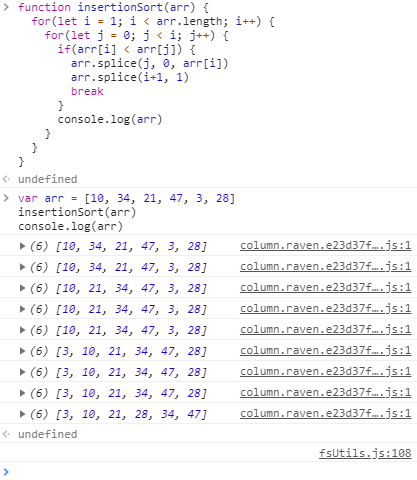

【分析】JS实现排序算法3——插入排序
广宇 2018-10-20
算法
JavaScript
明天回宁波，今天下午水一篇博客，那就接着把插入排序以及其JS实现代码分析一下。本来今天是想 继续整理CSS深入浅出的，但是时间不是很多，这次就只能写一篇内容不太长的博客，能短时间写完的那种。
写完之后就去剃头，晚上再去吃饭，本次博客就稍微划划水好了。
这次我就来讲讲插入排序，插入排序的定义在维基百科上如下：
插入排序（英语：Insertion Sort）是一种简单直观的排序算法。它的工作原理是通过构建有序序列，对于未排序数据，在已排序序列中从后向前扫描，找到相应位置并插入。
老规矩，用自然语言实现一遍插入排序：
- 第一个元素被认为已经排序完成，取出第二个元素与第一个元素进行比较。
- 若第二个元素大于第一个，则将第二个元素放在第一个元素后面，否则放在第一个元素前面。
- 第一个与第二个元素排序完成，取出第三个元素与排序完成的元素从后往前进行比较。
- 把第三个元素放到已排序的元素中间的合适位置
- 前三个元素排序完成，把第四个元素取出，重复3、4步骤
可以说，插入排序就是将每个元素依次取出，再将数字插入到已排好的元素中的合适的位置里。下面再看一张插入排序的模拟过程，可以看出，与用自然语言描述的方法基本一致：

以下则是通过JS实现插入排序的代码：
function insertionSort(arr) {
for (let i = 1 ; i < arr.length ; i++) {
for(let j = 0; j < i; j++) {
if(arr[i] < arr[j]) {
arr.splice(j , 0, arr[i])
arr.splice(i+1 , 1)
break
}
console.log(arr)
}
}
}
1
2
3
4
5
6
7
8
9
10
11
12
2
3
4
5
6
7
8
9
10
11
12
对代码内容进行逐条分析，其中：
- “let i = 1 ; i < arr.length ; i++”这一句是指定当前需要插入元素的代码。i=1即是第一次需要插入的是第二个元素，每次插入完成后i加1，当i等于数组长度时排序完成。
- “let j = 0; j < i; j++”这一句指定的是已排序完成的元素的最大下标。j=0即是第一个元素被认为排序完成，需要插入的元素从前往后进行比较，每次比较完成后j加1，当j=i时，意为需要插入的元素比已排序完成的所有数都要大，直接排在已排序完成的数后面即可，不需调换位置。
- “if(arr[i] < arr[j])”及其包含的代码代表在比较过程中的操作。需要插入的元素若小于正在比较的已排序完成的数，则讲其插在该数前面，并跳出循环，结束该轮插入。若需要插入的元素若大于正在比较的数，则将j加1，需要插入的元素与下一个已排序完成的数进行比较，再重复刚才的判断。
- “console.log(arr)”代表每次插入完成后，都会输出一遍插入的情况。
在浏览器里实现一下这个代码，可以正常运行：

插入排序的时间复杂度为 O(n^2)，数组长度每增加10倍，排序长度增加100倍。
在JS的实现上，可以看出插入排序和选择排序的实现方式的区别都很大。前两种方法在每轮排序都涉及到了整个数组，插入排序每次都是选择一个元素进行比较，直到排序完成才会涉及到整个数组，感觉空间的使用上比前两种排序要少。这只是我的感觉而已，具体如何如何查查资料才知道。下次有空的时候继续完成其他几种排序的分析。
← 【记录】原型与原型链 【归纳】IFC解惑 →